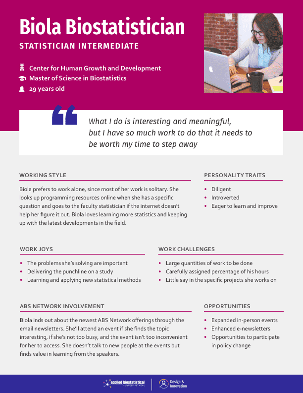
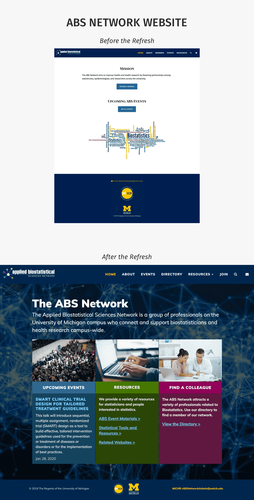

Problem
A few years ago, the Biostatistics team at the Michigan Institute for Clinical and Translational Research (MICHR) noticed that staff statisticians were spread out and siloed across campus. They wanted a way to bring them all together, and the Applied Biostatistical Science (ABS) network was born. This resource aimed to foster partnerships among statisticians, epidemiologists, and researchers across the university.
Now that the ABS Network has grown in size to over 250 members, the Biostatistics team wants to find ways to further engage and serve their members beyond the current offerings of in-person seminars and courses.
Goals
The ABS Network serves two core audiences:
- Biostatisticians
• Create community
• Share resources
• Develop resources together - General University of Michigan audience
• Help people across campus find Biostatisticians
The overarching goals of the project is to find opportunities to serve these audiences.
User Research
Methods
To understand the comprehensive set of user needs, we engaged in empathy interviews with Biostatisticians. We also set up interviews with administrators for the Clinical Trial Support Units across campus, who are the people most likely to seek out biostatistican support.
A deeper description of methods, including specific questions asked, can be found in the full User Research Report.
Key Insights
Our interviews revealed a deeper understanding into the Biostatistician experience under four key domains:
- Me & My Work
Biostatisticians find their work meaningful, but feel inundated with the requests they get. - Connecting
Biostatisticians have a desire to connect to other biostatisticians but experience internal and external barriers that keep them from making the connections they seek. - Learning
Biostatisticians have an appetite for learning more statistics, whether in a formal setting or informally through asking questions to people they have access to. - The ABS Network
Biostatisticians do not use the ABS Network website, but rather find value in the network through seminars and events. They learn about ABS events primarily through emails.
Persona
To bring our user research to life for our partner team, I created a persona for a Biostatistician at the University of Michigan.
Recommendations
After learning about how Biostatisticians used the network and how the existing ABS Website was being utilized, we uncovered opportunities for the ABS Network team to provide further support to their members, such as:
- Expand ABS events to include more topics and add more inclusivity and convenience for biostatisticians in different work configurations.
- Start an U-M Annual Biostatistics conference to celebrate the biostatistician community and form closer bonds.
- Create a Slack channel, or some other forum of short, just-in-time, informal communication needs.
- Expand on or take inspiration from the IHPI group of biostatisticians, who seem to have found a good structure for productive and engaging careers.
- Run deliberate experiments to explore digital communication mediums such as e-newsletters.
- Involve engaged ABS members to work towards policy change at U-M. Biostatisticians are looking to create meaningful change and the ABS network is uniquely positioned to bubble deficiencies in a systematic and constructive manner.
A list of full recommendations can be found in the full User Research Report.
Bonus: Website Refresh
As part of our work with the ABS Network team, we uncovered that while the website was not the primary way members engaged with the network, it was the face of the network for new members, as well as groups and institutions interested in learning more about the network.
The original website was created to test functionality, while less attention was paid to the website’s visual design. But as the network is gaining prominence and the team is starting to exhibit the site to greater audiences, the site’s visuals need to appear more high-quality and professional.
As a bonus addition to this project, our team gave the website a refresh, both designing the site as well as implementing it in code.
Design Considerations
The page was reaching a technical audience who came for a specific purpose and needed to quickly find what they were looking for. This made it so that the page content needed to fit above the fold on large screens, while featuring lots of links at the ready.
Final Report
Explore the full User Research Report as a PDF.